Neden böyle bir şeye ihtiyaç duydum
Hava durumu uygulamalarının hepsi aynı şeyi yapıyor: bir noktanın havasını gösteriyor. Yola çıkan biri içinse bu pek işe yaramıyor. İstanbul'dan saat 11'de çıkıp Ankara'ya gidiyorsanız İstanbul'un şu anki havası sizi pek ilgilendirmez. Asıl merak ettiğiniz, saat 14 civarında Bolu'ya vardığınızda orada ne olacağı.

Bu, meteoroloji açısından bambaşka bir hesap. Tek konumun zaman serisi değil, rota boyunca bir zaman-mekân kesiti çıkarmanız gerekiyor: aracın konumu zamanla ilerlerken tahmin alanı da zamanla değişiyor. İkisini eşleştirmek lazım.
Derste gördüğümüz konularla doğrudan ilgili bir problem olduğu için yazmaya başladım.
Yolda ne oldu
6.4 sürümüne gelene kadar 15 sürüm çıkardım ve her birinin sebebi bir şeyin çalışmamasıydı; web sürümü bugün (Eylül 2026) 10. sürümünde, 7 dilde. Önemli kırılmaları yazdım:
-
Sürüm 2 · başlangıç
Önce sadece sinoptik harita yaptım
İlk hedefim basitti: basınç alanlarını ve cepheleri düzgün çizebilen bir harita. Rota hesabı yoktu. Bu sürüm bana veri kaynaklarının nasıl davrandığını öğretti. Zor olanın çizim değil, veriyi zamanında ve tutarlı almak olduğunu burada gördüm.
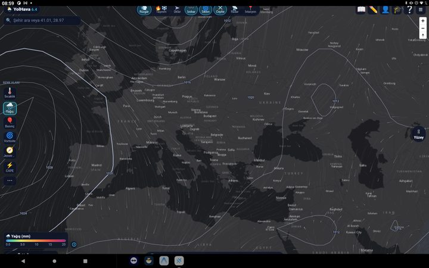
Sinoptik katman: siklonlar ve cepheler. -
Duvar
Rota ile tahmin zamanını eşleştirmek
İlk rota denemesi yanlış sonuç veriyordu, çünkü yolun her noktası için aynı tahmin saatini kullanıyordum. Sürücü Bolu'ya 3 saat sonra varacaksa Bolu için 3 saat sonrasının tahminini okumak gerekiyor. Çözüm, rotayı mesafe değil süre üzerinden bölümlemek oldu: her parça kendi tahmin adımıyla eşleşiyor.
-
Duvar
Veriyi kullanıcının anlayacağı şeye çevirmek
Bir meteoroloji öğrencisine "18 mm/sa yağış, 850 hPa'da -2 °C" deyince bir şey ifade eder. Sürücüye etmez. Uzun süre burada takıldım. Sonunda her segmenti yeşil / sarı / kırmızı bir karara indirdim ve ham değerleri isteyen görebilsin diye arkaya koydum. Bilgiyi silmeden basitleştirmek gerekiyordu.
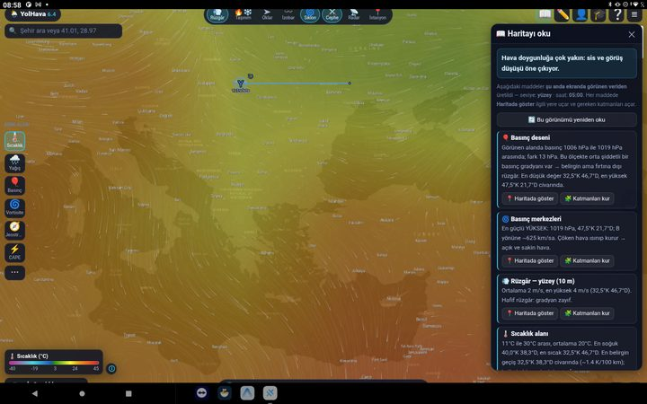
"Haritayı oku": sembollerin ne anlama geldiğini anlatan rehber. -
Sürüm 6.x
3B atmosfer görselleştirmesi
Küre üzerinde siklonları, cepheleri ve taşınım hareketini gösteren bir katman ekledim. Artık sadece "yarın yağmur var mı" değil, atmosferin nasıl çalıştığı da görülebiliyordu.
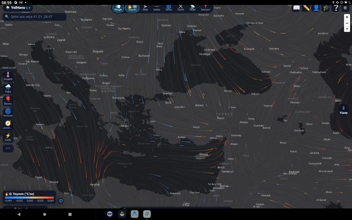
Taşınım katmanı: havanın dikey hareketi. -
Sürüm 7 · şu an
Öğreten katman
Uygulamaya "Akademi" adında bir bölüm ekledim. İçinde 52 adım adım ispat, 19 simülasyon ve 356 terimlik bir sözlük var. Bir uyarı gördüğünde neden öyle olduğunu da okuyabilesin istedim. Bir meteoroloji öğrencisi ders çalışırken de kullanabilir.
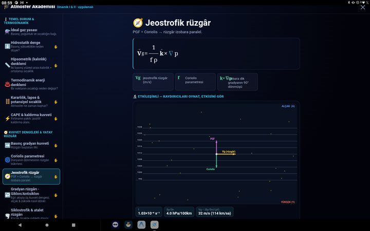
Akademi: sürüm 7'de gelen öğrenme bölümü.
Uygulamadan görüntüler
Haritada çalışma
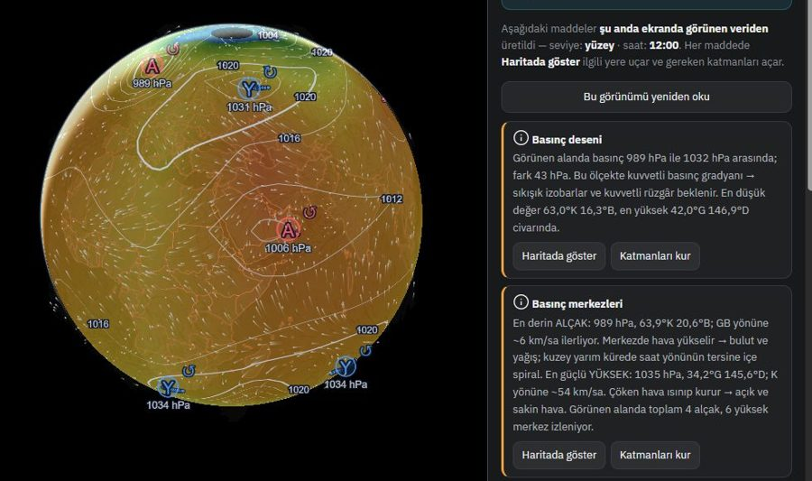
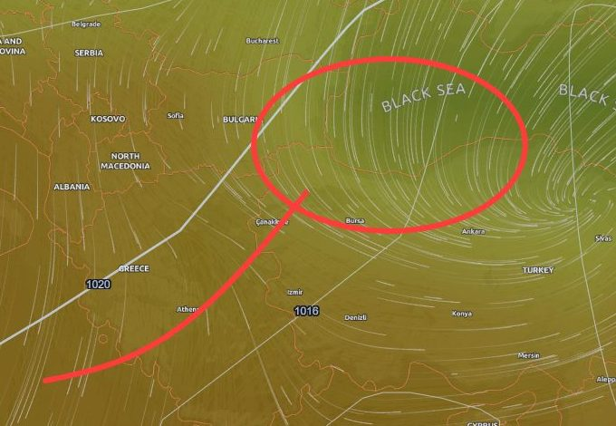
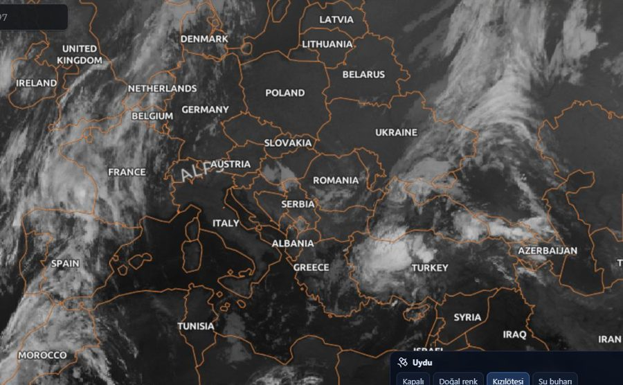
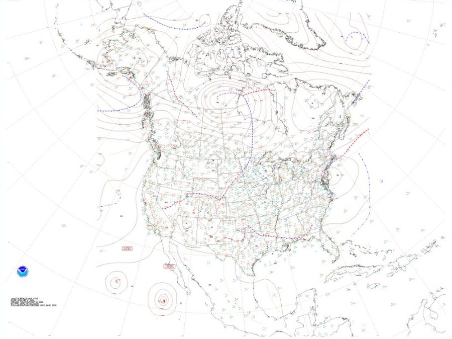
Akademi: öğrenme bölümü
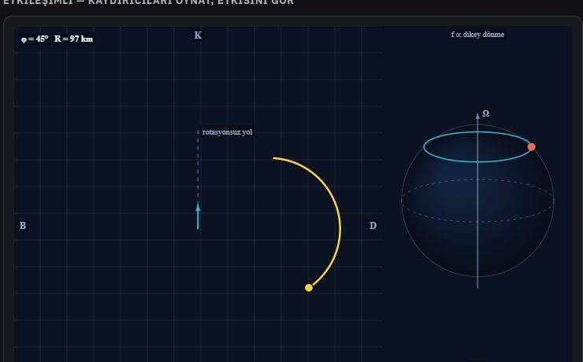
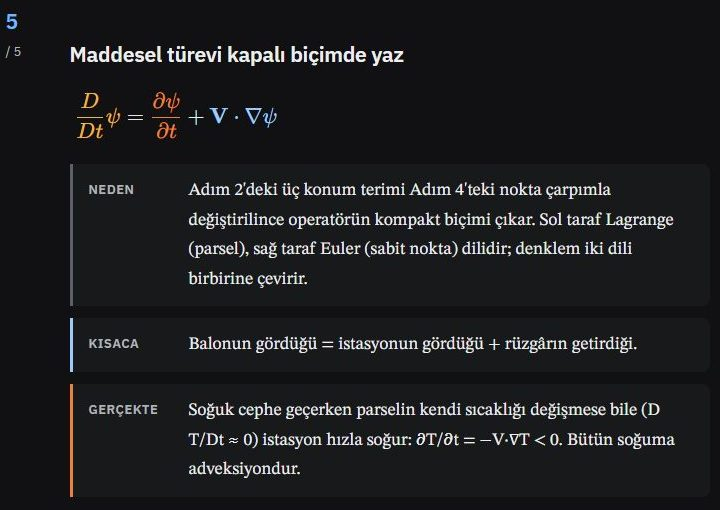
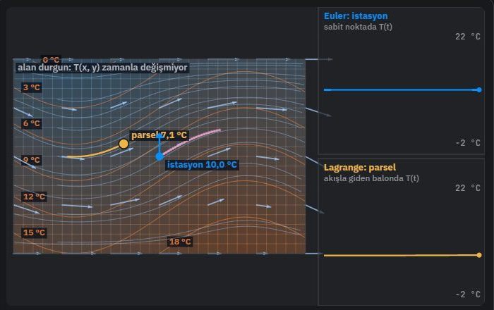
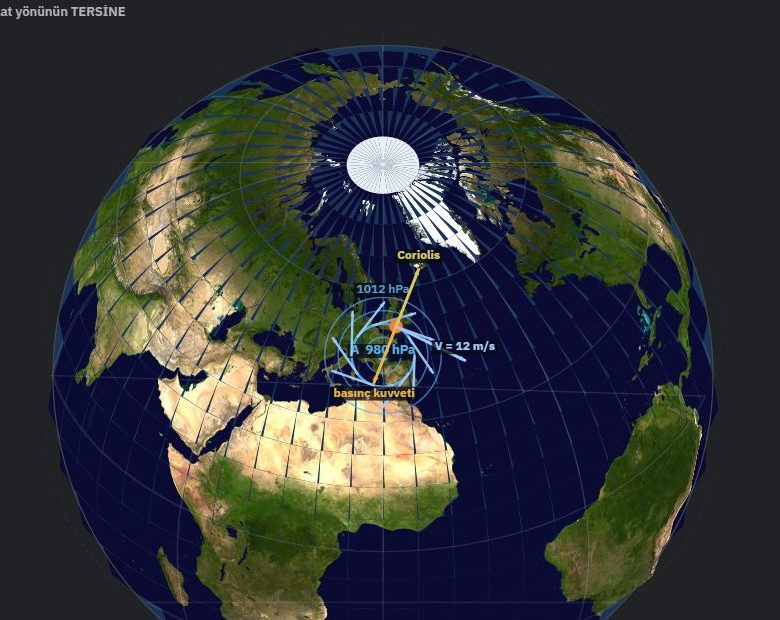
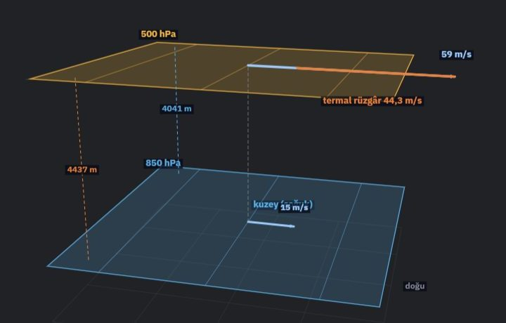
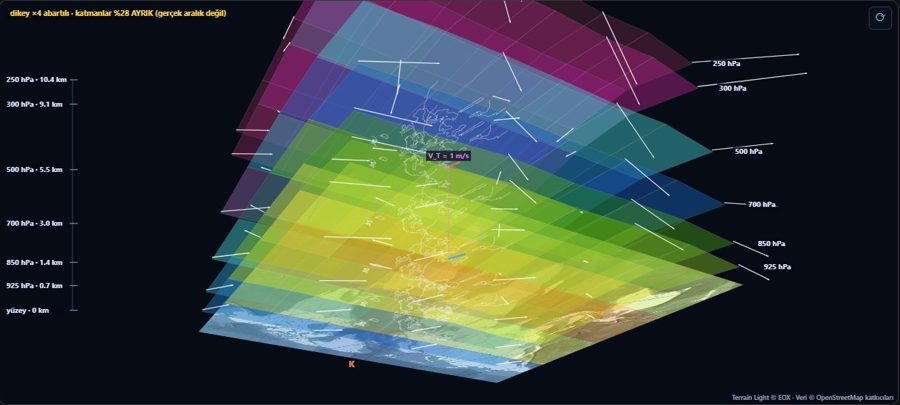
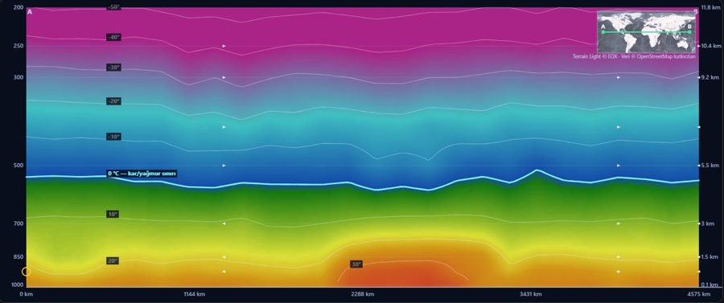
İlk sürümlerden
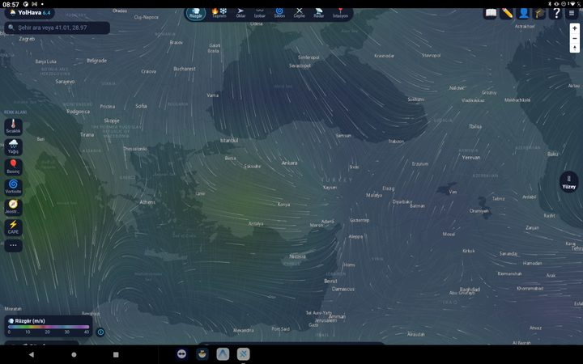
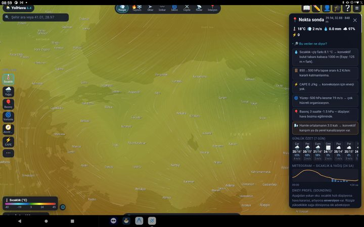
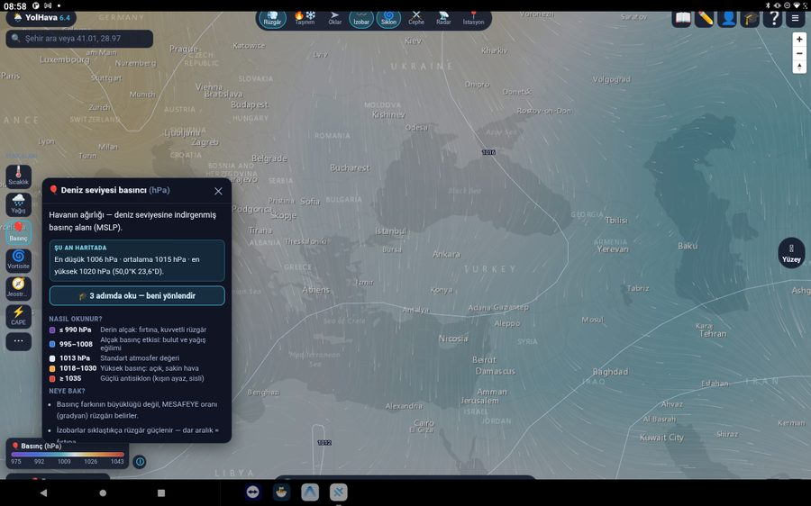
Hangi noktadayım
| Ne | Durum |
|---|---|
| Web sürümü | Canlı ve herkese açık |
| Android sürümü | İmzalı paket hazır, bu sayfadan indirilebilir |
| Google Play | Henüz yayında değil |
| Güncel sürüm | 6.4 |
| Geliştirici | Tek kişi (ben) |